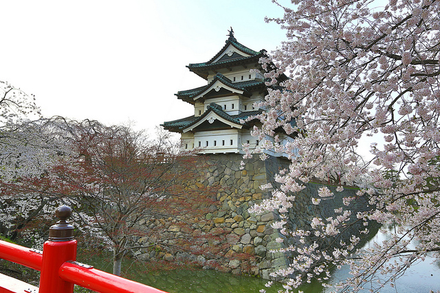
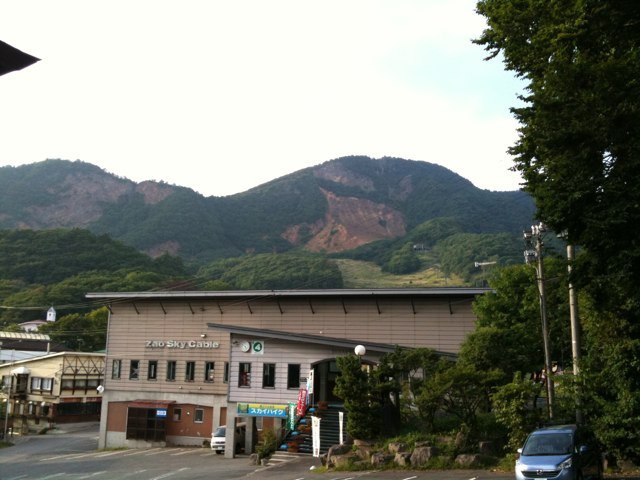
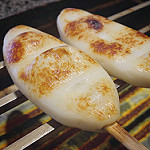
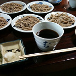

아오모리현(靑森縣), 이와테현(岩手縣),미야기현(宮城縣), 아키타현(秋田縣), 야마가타현(山形縣), 후쿠시마현(福島縣), 니가타현(新潟縣)의 7현으로 구성되어, 혼슈(本州)의 약 3할의 면적을 차지하는 지방이다.
기후
전반적으로 여름은 비교적 시원하고 겨울은 해측을 중심으로 눈이 많이 내려 사계절이 매우 명료.
높고 험한 산맥이 동북지방을 동서로 나누고 있기 때문에, 태평양측과 동해측의 기후가 두드러지게 다른 양상을 보인다.
여름이 되면 태평양측에 "야마세"라고 하는 찬 바람이 부는 영향으로 비교적 선선해지나, 동해측에서는 분지를 중심으로 고온이 될때가 많다.
겨울이 되면 태평양측에서는 맑은 날이 지속되어 강설량도 적지만, 동해측에는 눈이 많이 내리고, 특히 산간부가 많은 곳에서는 5m정도로 세계유수의 대설지대가 되기도 한다. 아침 저녁은 평지라도 상당히 추워지기에, 또 산악지대는 평지보다도 10도정도 더 낮아지므로 방한대책에는 주의를 요한다.
관광지
◆ 히로사키 공원(弘前公園)
일본 아오모리 현 히로사키 시에 있는 공원.
도호쿠 지방에서 가장 아름다움 벚꽃을 볼 수 있는 벚꽃 축제가 열리기도 하는 이 곳은, 1611년에 축조된 히로사키 성을 중심으로 자리잡고 있다.
- 영업시간
- 히로사키 성 및 북쪽 외곽: 4/1 ~ 11/23 9:00 ~ 17:00
* 벛꽃 축제 기간: 7:00 ~ 21:00
- 히로사키 성 식물원: 4월 중순 ~ 11/23 9:00 ~ 17:00 (입장 ~ 16:30)
* 벚꽃 축제 기간: 9:00 ~ 18:00 (입장 ~ 17:30) - ■ 유료 기간 중 시설 요금(1일 / 연간)
- 개인: 어른 310엔, 어린이 100엔 / 어른 1,020엔, 어린이 300엔
- 단체: 어른 250엔, 어린이 80엔 / -
* 위의 입장권은 시설 각각임.
■ 공통권 요금(1일 / 연간)
- 개인: 어른 510엔, 어린이 160엔 / 어른 2,050엔 어린이 610엔
- 단체: 어른 460엔, 어린이 130엔 / -
■ 공원 내 서쪽 해자 보트 렌터 요금
- 요금: 시간당 1,000엔
* 우천시 개업하지 않을 수 있음.
- 영업: 벚꽃 축제 기간 9:00 ~ 17:00
* 첫 날은 9:00 ~ 안전기원제 이후. - 휴관일
- 히로사키 성 및 북쪽 외곽: 11/24 ~ 3/31 * 휴관일 기간 동안 입장 무료
- 히로사키 성 식물월: 개원기간 중 무휴 - 오는 길
- 히로사키 역(弘前駅)에서 도보 약 30분 또는 택시 탑승 약 10분
- 히로사키 역(弘前駅)에서 버스로 시야쿠쇼마에(市役所前) 하차 후 도보 약 4분
◆ 자오온천(蔵王温泉)
야마가타 현 야마가타 시에 있는 온천. 예로부터 병을 치유하기 위한 온천장으로 유명하다.
- 영업시간: 연중 (시설별 확인 요함.)
* 일부 시설 스키 시즌 영업 휴무 - 사이트
음식
◆ 사사카마보코(笹蒲鉾)
미야기 현의 대표 음식.
대나무(사사)와 어묵(카마보코)를 합쳐 이름이 붙여졌는데, 모양이 대나무를 닮았기 때문이라고 한다. 생선 살을 다져 소금과 미린, 설탕, 전분을 넣고 찌거나 구운 음식이다.
◆ 왕코소바(椀子そば)
이와테 현의 대표 음식.
처음 한그릇을 먹자마자, 음식을 주는 사람이 큰소리를 지르며 다시 국수 한 덩이(한 입 분량)를 빈 그릇에 내던지듯 담고, 먹을 수 있을 때까지 계속해서 그릇을 채워주는 방식으로도 먹는다고 한다. 또한, 매년 모리오카와 하나마키에서 왕코소바 많이먹기 국제챔피언십이 열리기도 한다.
◆ 기리탄포(きりたんぽ)

아키타 현의 대표 음식.
주로 9월 중순에서 다음해 3월까지 먹으며, 햅쌀이 시장에 나오는 11월에 가장 많이 먹는다. 밥을 지어 이겨서 꼬치에 뭉쳐 구운 후에 5cm 크기로 잘라 우엉, 부추, 잎새버섯, 일본 파슬리와 같은 제철 야채와 닭고기를 함께 넣고 먹는 전골 요리이다.